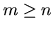

Next: LQ Factorization
Up: Orthogonal Factorizations and Linear
Previous: Orthogonal Factorizations and Linear
Contents
Index
The most
common, and best known, of the factorizations
is the QR factorization
given by
where R is an n-by-n upper triangular matrix and Q is an m-by-m
orthogonal (or unitary) matrix. If A is of full rank n, then R is
non-singular.
It is sometimes convenient to write the factorization as
which reduces to
A = Q1 R ,
where Q1 consists of the first n columns of Q, and Q2 the
remaining m-n columns.
If m < n, R is trapezoidal, and the factorization can be written
where R1 is upper triangular and R2 is rectangular.
The routine xGEQRF
computes the QR factorization. The matrix Q is not
formed explicitly, but is represented as a product of elementary reflectors,
as described in section 5.4.
Users need not be aware of the details of this representation,
because associated routines are provided to work with Q:
xORGQR (or xUNGQR
in the complex case) can generate all or part of Q,
while xORMQR (or xUNMQR) can pre- or post-multiply
a given matrix by Q or QT
(QH if complex).
The QR factorization can be used to solve the linear least squares
problem (2.1) when 
and
A is of full rank, since
c can be computed by xORMQR (or xUNMQR
), and c1 consists of its first
n elements. Then
x is the solution of the upper triangular system
Rx = c1
which can be computed by xTRTRS.
The residual vector r is given by
and may be computed using xORMQR (or xUNMQR
).
The residual sum of squares |r|22 may be computed without forming r
explicitly, since
|r|2 = |b - Ax|2 = |c2|2.
Next: LQ Factorization
Up: Orthogonal Factorizations and Linear
Previous: Orthogonal Factorizations and Linear
Contents
Index
Susan Blackford
1999-10-01